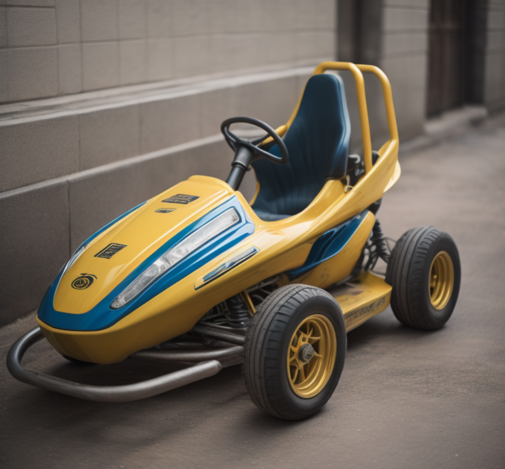
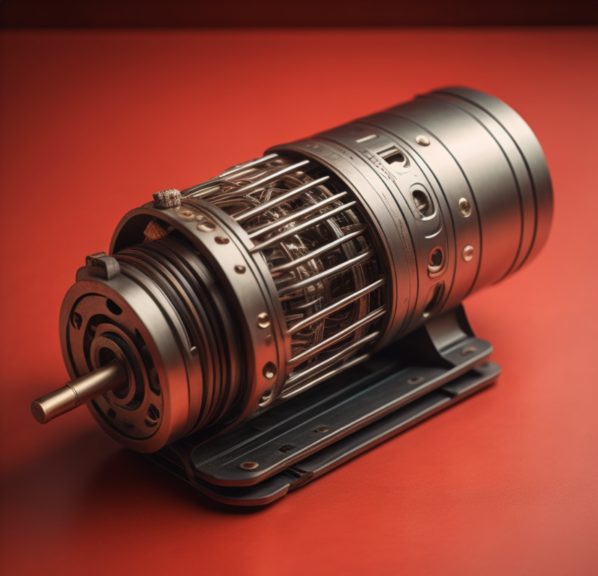

Electric or Gas? Which is Best for your Go Kart?

Jeff Bridges
Article Written June 4, 2023 1:45pm ET

Electric or Gas?
When building a go kart, one of the crucial decisions you'll face is selecting the right power source. Electric motors and gas motors both have their merits, and choosing between them depends on various factors. In this article, we will explore the advantages and considerations of each option to help you make an informed decision that aligns with your go karting needs. Click here for our electric go kart plans.
Electric Motors More Powerful?
Gas motors are known for their raw power and torque, making them a popular choice for go karts focused on speed and performance. With a gas motor, you can experience exhilarating acceleration and higher top speeds. On the other hand, electric motors offer instant torque, delivering smooth and consistent power. While they may not match the sheer power of gas motors, electric motors provide excellent low-end torque, making them ideal for quick acceleration and responsive handling.

Electric Motors Easier Maintenance
Electric motors offer several advantages in terms of convenience and maintenance. They are quieter and produce zero emissions, allowing for a more peaceful and environmentally-friendly riding experience. Electric go karts require less maintenance, as they have fewer moving parts and do not require oil changes or fuel refills. Gas motors, on the other hand, require regular maintenance, such as fuel and oil changes, spark plug replacements, and carburetor adjustments. Consider your preference for convenience and the level of maintenance you are willing to undertake when choosing between electric and gas motors.

Gas Engines Cheaper
When it comes to cost and efficiency, electric motors have the upper hand. Electric go karts are generally more energy-efficient, requiring less fuel or energy to operate. They also have lower operating costs over time, as electricity is often cheaper than gasoline. However, the initial cost of electric motors and batteries can be higher compared to gas motors. Gas motors, on the other hand, have lower upfront costs but require ongoing expenses for fuel and maintenance. Consider your budget and long-term operating costs when evaluating the cost-efficiency of electric and gas motors.
Gas Engines Higher Range
Gas motors provide greater versatility and range compared to electric motors. With a gas-powered go kart, you have the freedom to explore various terrains and ride for extended periods without the need for recharging. Gas motors also offer the flexibility to carry extra fuel for longer journeys. Electric go karts, although limited by battery capacity, are ideal for shorter rides or in areas where recharging stations are easily accessible. Consider the intended use of your go kart and the range requirements when deciding between electric and gas motors.
Electric or Gas? Conclusion
Choosing between an electric motor and a gas motor for your go kart involves considering factors such as power, convenience, cost, and versatility. Gas motors excel in power and range, making them suitable for high-performance applications. Electric motors offer convenience, lower maintenance, and environmental benefits. Assess your priorities, riding preferences, and budget constraints to determine which power source aligns best with your go karting needs. Ultimately, both electric and gas go karts have their own unique appeal, and the choice depends on your specific requirements and preferences.
Related Articles


Questions? Contact Us
If you have any questions about our go kart designs or need assistance, feel free to reach out to us. You can contact us by email at darringer.capital.investments@gmail.com
You can also visit our FAQ section.
darringer.com | 2023 privacy policy